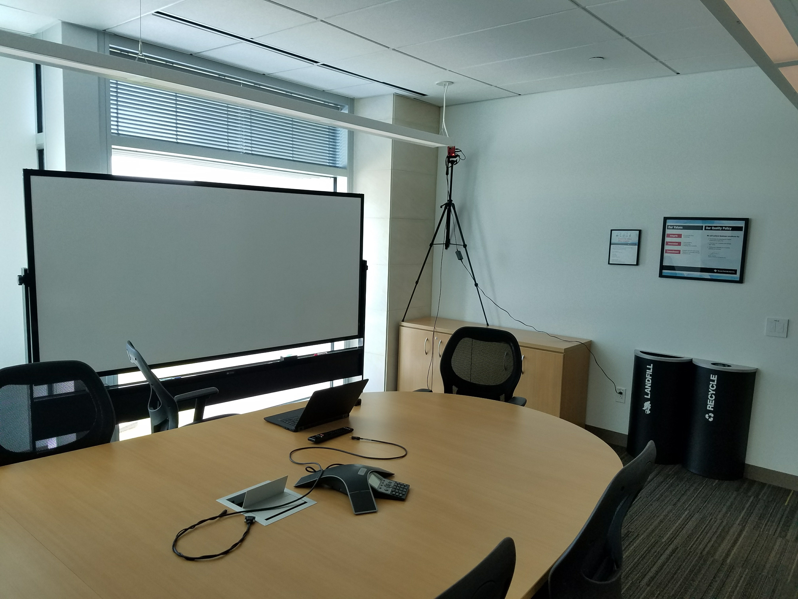
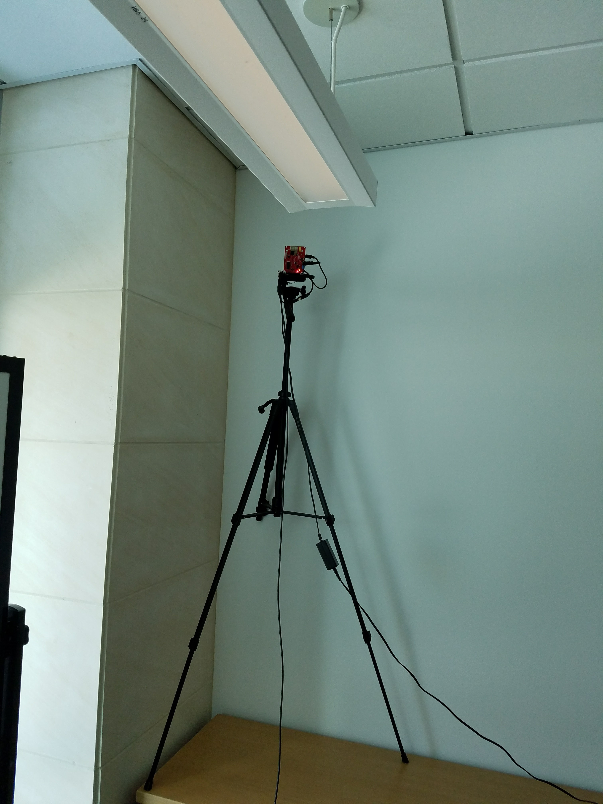
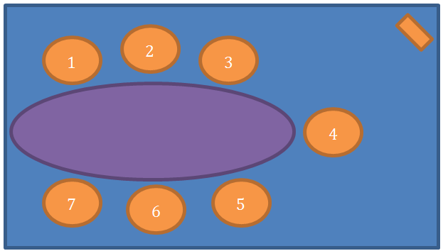
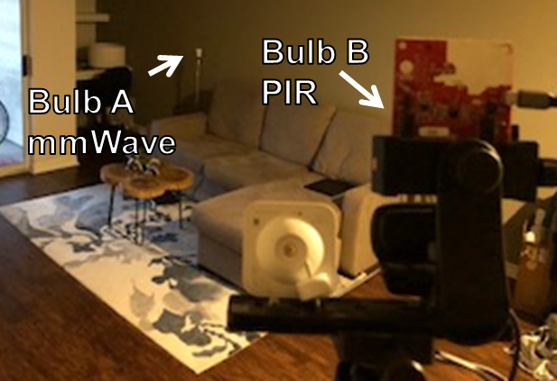
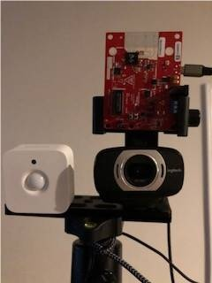
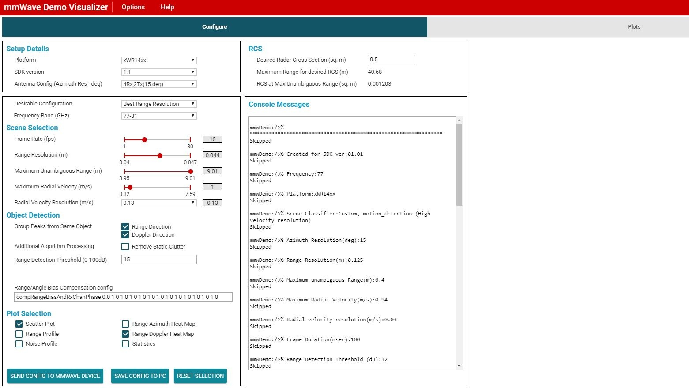
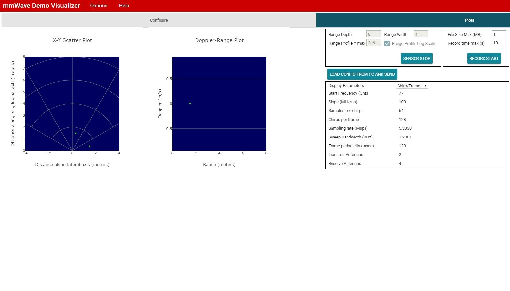
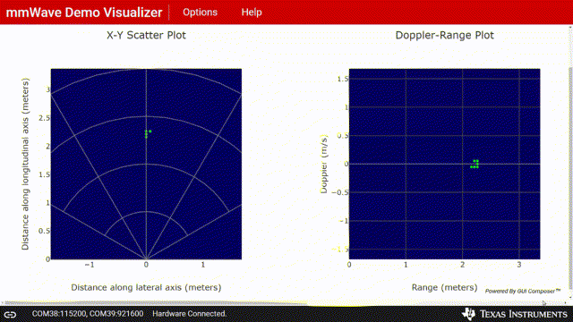

Updated For IWR6843 ISK
Introduction
The objective of this experiment is to evaluate the ability of TI mmWave sensor to detect very fine motion. This experiment demonstrates that TI mmWave is not only able to detect major motions such as a person walking or moving their arms but can also detect very fine movements such as typing and even breathing. Furthermore, fine motion detection in environmental conditions of darkness or smoke, which can be respectively challenging for cameras or PIR sensors was also evaluated. This experiment has two parts:
- Normal conditions for a conference room: The experiment was performed under normal environmental conditions in a small conference room. The response of the mmWave sensor EVM to different types of motion at various distances was captured and compared to the response of a PIR based motion sensor installed in the room.
- Living room under darkness or smoke: The experiment was performed in a living room with smart lighting. The EVM and a PIR sensor were each mounted in the room and used to control a smart light bulb. The effect of total darkness and smoke on the response of the EVM and PIR sensor to fine motions were then compared.
The setup for this experiment can be divided into two parts, namely physical setup and software setup.
Physical Setup
The physical setup includes information about the scene such as the distance between the target and the sensor antenna, the type of target used, hardware setup and any other physical considerations e.g. non-reflective surfaces or use of anechoic chamber etc.
The physical setup used for Part 1: Normal Conditions for a Conference room:
- Tests were conducted in a small conference room with dimensions of 4.40 m x 5.12 m x 2.73 m (width x depth x height).
- An IWR1443 EVM was mounted in one of the corners of the conference room using a tripod as shown in the picture below. The EVM was mounted at a sufficient height and was tilted downwards to maximize the coverage area in the field of view of the sensor.
- A PIR based motion sensor integrated with the light switch in the conference room was used as a reference for all measurements.
- The motion sensor has LED outputs which light on when motion is detected.
- It was ensured that the motion sensor had a direct view of the target in all cases.
- The human target moved to different locations in the conference room as shown in Figure 3.
- Unless otherwise noted, the target was always in direct view of the mmWave sensor, i.e. there were no physical obstructions between the target and the sensor.
For the purpose of this experiment, the motions of interest are defined as following:
Major motion: Person walking, Arm movement, etc.
Fine motion: Typing
Very fine motion: Breathing
There were no other sources of motion in the conference room.
Figure 1. EVM Setup in Conference Room | Figure 2. EVM Setup | Figure 3. Human Subject Location |
The physical setup used for Part 2: Living Room under Darkness or Smoke:
- All tests were conducted in a living room with dimensions of 4.40 m x 3.93 m x 3.04 m (width x depth x height).
- An IWR1642 EVM and PIR sensor were mounted in a corner of the living room using a tripod as shown in the picture below. The sensors were mounted at 1.5m and faced towards the test area.
- The PIR sensor had 3 modes: low, medium and high motion sensitivity. High sensitivity mode was used.
- There were two smart bulbs in the room.
- The bulb on the left side of the room was controlled by the PIR sensor.
- The bulb on the right side of the room was controlled by the EVM.
- If motion was detected by the PIR sensor EVM then the bulb it was paired with in the ON state. If there was no motion detected then the bulb would be in the OFF state.
- The environment of the room was adjusted:
- For darkness, any lights were turned off
- For smoke, a fog machine was run for 2 min to pre-fill the room with smoke. The fog machine was left on and continued to emit during the testing.
- For the testing, the human target sat on the sofa 3.5m from the sensors and performed the following motions:
- Very fine motion: breathing normally
- Fine motion: grabbing a laptop and typing on the laptop
- Major motion: standing up and walking
There were no other sources of motion in the living room.
 Figure 4. EVM and PIR Setup in Living Room |  Figure 5. Sensors and webcam assembly |
|---|
Software setup
The software setup used with the IWR6843 ISK;
- The IWR6843 ISK was running the mmWave SDK 3.0.0.8 SDK Out-of-Box Demo.
- The IWR1443 EVM was connected to a Windows laptop running the mmWave Demo Visualizer.
- The mmWave Out-of-Box demo was setup with a custom chirp configuration: 68xx_fine_motion.cfg
- This chirp configuration configures the mmWave sensor for very high velocity resolution and a maximum range of about 6 meters
- Static clutter removal option is enabled to filter stationary targets such as chairs and tables etc.
- Peak grouping option is disabled in both Range and Doppler dimensions to visualize all the detections in the OOB Demo Visualizer plots.
- Details of the chirp configuration including the OOB demo configuration file provided above are available under the Very Fine Motion Detection chirp on TI Resource Explorer.
The software setup used for Part 1: Normal Conditions for a Conference room:
- The IWR1443 EVM was running the mmWave SDK 1.1 Out-of-Box Demo.
- The IWR1443 EVM was connected to a Windows laptop running the mmWave Demo Visualizer.
- The mmWave Out-of-Box demo was setup with a custom chirp configuration: 14xx_oob_sdk_1.1_motion_detection_6.4m.cfg
- This chirp configuration configures the mmWave sensor for very high velocity resolution and a maximum range of about 6 meters.
- Static clutter removal option is enabled to filter stationary targets such as chairs and tables etc.
- Peak grouping option is disabled in both Range and Doppler dimensions to visualize all the detections in the OOB Demo Visualizer plots.
- Details of the chirp configuration including the OOB demo configuration file provided above are available under the Very Fine Motion Detection chirp on TI Resource Explorer.
The software setup used for Part 2: Living Room under Darkness or Smoke:
- The IWR1642 EVM was running the mmWave SDK 1.1 Out-of-Box Demo.
- The IWR1642 EVM was connected to a Windows laptop running the mmWave Demo Visualizer with custom modification to enable a driver for controlling the smart bulb.
- For each frame, if the OOB demo returned any number of detection points the bulb state was ON.
- If there were no detection points, the bulb state was OFF.
- The mmWave Out-of-Box demo was setup with a custom chirp configuration: 16xx_oob_sdk_1.1_motion_detection_6.4m.cfg
- This chirp configuration configures the mmWave sensor for very high velocity resolution and a maximum range of about 6 meters.
- Static clutter removal option is enabled to filter stationary targets such as chairs and tables etc.
- Peak grouping option is disabled in both Range and Doppler dimensions to visualize all the detections in the OOB Demo Visualizer plots.
- Details of the chirp configuration including the OOB demo configuration file provided above are available under the Very Fine Motion Detection chirp on TI Resource Explorer.
- The PIR sensor was paired to the smart bulb using the bulb's accompanying smartphone app. The app was used to set the following motion detection and bulb response settings:
- PIR motion sensitivity: High
- Bulb OFF: no motion detected for 1min (1min delay mandated by app)
- Bulb ON: motion detected
Method
Method used for Part 1: Normal Conditions for a Conference room:
The steps presented below were repeated for various types of motions and target locations.
- Create the physical setup as per the details provided above.
- Flash the mmWave SDK 1.1 Out-of-Box Demo on the mmWave EVM and connect the EVM to the host PC.
- Launch mmWave Demo Visualizer on the host PC and setup the Visualizer using the provided configuration file as shown below:
- Platform: xWR14xx
- SDK Version: 1.1
Desired Configuration: Defined by the configuration file
All other settings: Defined by the configuration file


- Download the configuration file: 14xx_oob_sdk_1.1_motion_detection_6.4m.cfg
- Go to the Plots tab on the Visualizer and click the "Load Config From PC and Send" button
- Select the downloaded configuration file and press "Open".
- Have the human target stand or sit comfortably at the desired distance from the sensor while performing the desired movements e.g. moving their arm or typing etc.
Analyze the X-Y Scatter and Doppler-Range plots on the mmWave Demo Visualizer to determine if the motion is detected or not.
- During no movement, the plots should not show any points. This is becuase static clutter removal option is enabled so objects which are stationary i.e. zero Doppler are filtered out by the OOB Demo digital processing chain. However, both sensor plots showed some “noise”, i.e. a few dots appeared scattered on the plots.
- Motion is indicated as dots (detections) on the X-Y Scatter and Doppler-Range plots.
- The X-Y scatter plot shows the position (range and angle) of the detected points relative to the sensor. Please note that the peak grouping option is disabled in this configuration so every detected point is seen as an individual dot in the X-Y scatter plot.
- The Doppler-Range plot shows the distance and velocity of the detected points with distance represented on the X axis and velocity represented on the Y axis. A negative velocity indicates a point moving away from the sensor.
The following sample video shows motion as visualized on the X-Y scatter and Doppler-Range plots for a human target sitting at little over 2 meters from the sensor.
The human subject was typing on a keyboard (fine motion) in the initial part of the video and later moves his arm to reach for his cellphone (major motion).
The Doppler-Range plot shows lot of detections for even small movements, due to the very high velocity resolution used in this configuration.

- Repeat step-4 for an equivalent distance from the PIR motion sensor and check the status of the output LED to determine if the motion is detected or not.
Method used for Part 2: Living Room under Darkness or Smoke:
- Create the physical setup as per the details provided above.
- Flash the mmWave SDK 1.1 Out-of-Box Demo on the mmWave EVM and connect the EVM to the host PC.
- Launch the custom mmWave Demo Visualizer with modification to control smart bulb A
- Use the visualizer to load the configuration file: 16xx_oob_sdk_1.1_motion_detection_6.4m.cfg
- Launch the smartl lighting app and set to control smart bulb B with specifications as detailed in Software Setup.
- The environment be should altered for either darkness or with smoke
- Human target should sit at distance of ~3.5m from the EVM and PIR sensor and perform the following actions:
- Breathe normally while sitting on sofa at a distance of ~3.5m from EVM and PIR sensor
- Reach for and grab laptop next to target
- Type at the laptop
- Put aside the laptop
- Stand up and walk towards the sensors
While the actions are performed the X-Y Scatter and Doppler-Range plots on the mmWave Demo Visualizer can be used to determine if the motion is detected or not as detailed in Methods: Part 1.
Additionally, in the smoke case, observe the bulbs as indicators of whether the EVM and/or the PIR sensor detected motion.
- Additionally, in the darkness case, observe the PIR app to determine whether or not motion was detected.
Results
Results for Part 1: Normal Conditions for a Conference room:
The steps presented above were repeated for the specified target locations and motion types. The results are summarized in the following table:
- A Green cell indicates that the motion was detected by the respective sensor and a Red cell indicates that the motion could not be detected by the respective sensor.
The Target Location column refer to the locations of the human subject as shown in Figure 3 above. The image is also copied below this table for easy reference.
Major Motion (Walking) Fine Motion (Typing) Very Fine Motion (Breathing) Target Location Distance from Sensor mmWave PIR mmWave PIR mmWave PIR 1 4.2 m ✔ ✔ ✔ ✖ ✔ ✖ 2 3.4 m ✔ ✔ ✔ ✖ ✔ ✖ 3 2.7 m ✔ ✔ ✔ ✖ ✔ ✖ 4 2.6 m ✔ ✔ ✔ ✖ ✔ ✖ 5 3.6 m ✔ ✔ ✔ ✖ ✔ ✖ 6 4.2 m ✔ ✔ ✔ ✖ ✔ ✖ 7 5.1 m ✔ ✔ ✔ ✖ ✔ (Only deep breathing detected) ✖ Figure 3 - Human Subject Location
Note: For very fine motion tests near the edge of the conference room, the subject had to take deep breaths for the sensor to pick up motion.
Results for Part 2: Living Room under Darkness or Smoke:
- A Green cell indicates that the motion was detected by the respective sensor and a Red cell indicates that the motion could not be detected by the respective sensor.
| Darkness Condition | Smoke Condition | ||||
|---|---|---|---|---|---|
| Action | Motion Type | mmWave | PIR | mmWave | PIR |
Breathe normally while sitting | Very fine | ✔ | ✖ | ✔ | ✖ |
Reach for and grab the laptop | Major | ✔ | ✖ | ✔ | ✖ |
Type on the laptop | Fine | ✔ | ✖ | ✔ | ✖ |
Put aside the laptop | Major | ✔ | ✖ | ✔ | ✖ |
| Stand up and walk towards sensors | Major | ✔ | ✔ | ✔ | ✔ |
The table below includes short clips of the testing cases. A semidarkness case was included for the ability to observe the motions. The same motions were performed in the total darkness and smoke cases.
| Condition | |
|---|---|
| Semi-darkness |
|
| Darkness |
|
| Smoke |
|


Conclusion
- Using the IWR1443 and IWR1642 SDK Out-of-Box Demo, we were able to successfully detect Major, Fine and Very Fine motions (as defined above) in a conference room and a living room
- mmWave is better than PIR for motion detection: For equivalent tests, the PIR motion sensor could detect only Major motions and was unable to detect Fine or Very Fine motions.
- mmWave continued to detect Major, Fine and Very Fine motions in darkness and smoke without issue.
- The PIR sensor, even at high sensitivity could not detect fine motions or even the major type arm motion of grabbing and opening a laptop. Furthermore, the smoke used in this experiment was simulated using a fog machine. Smoke caused by a fire is associated with higher temperatures and particulate matter that may have further deleterious effects on PIR sensor.
- The chirp configuration provided above represents one possible way to configure the sensor for this type of application. Advanced chirp designs, antenna designs and algorithms can provide better range and/or motion sensitivity.
- For example: A dual chirp design can be used with one chirp providing long range detection with lower velocity resolution and the second chirp with high velocity resolution at near range.
- The antenna onboard the IWR1443BOOST EVM has an Azimuth FOV (Field of View) of about 120 degrees and an elevation FOV of about 30 degrees. Custom antenna designs can be used to achieve wider FOVs in Azimuth and/or Elevation planes depending upon requirements.
- As an example of extreme motion sensitivity, the Vital Signs Demo available on TI Resource Explorer demonstrates the usage of TI mmWave sensors to detect miniscule motions, such as displacement of the chest when the heart beats or the person breathes. The demo uses these miniscule displacements to measure the heart rate and breathing rate of a human subject.